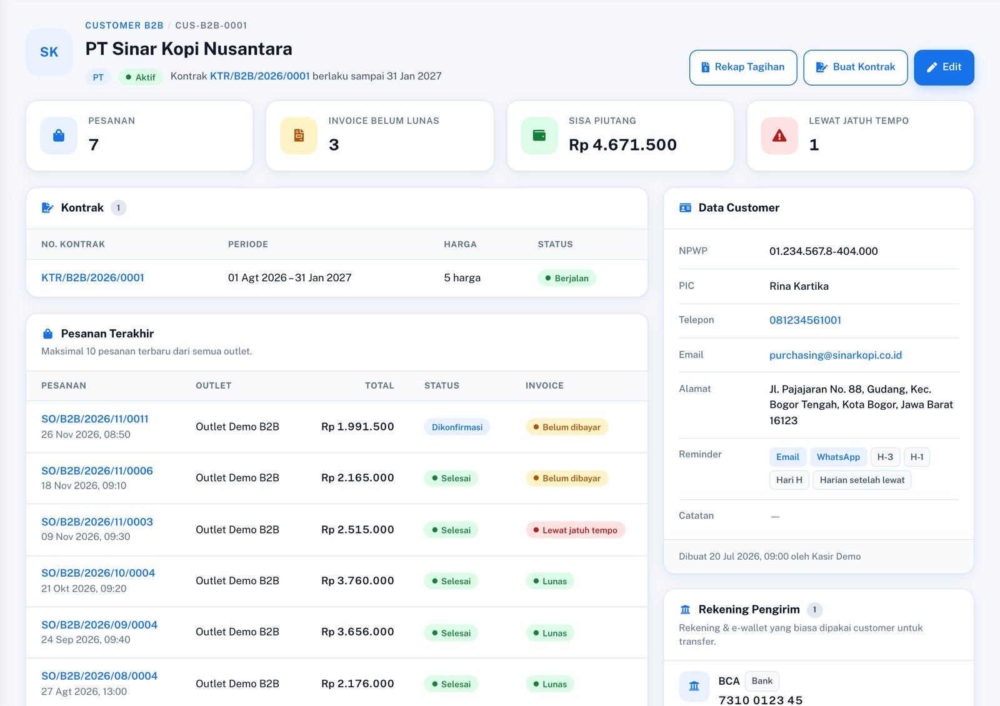
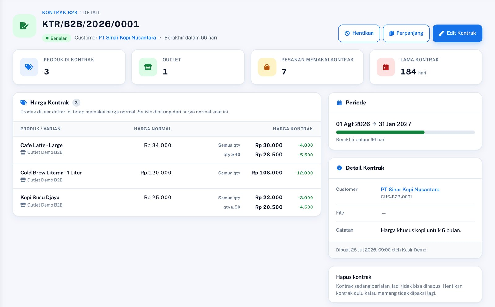
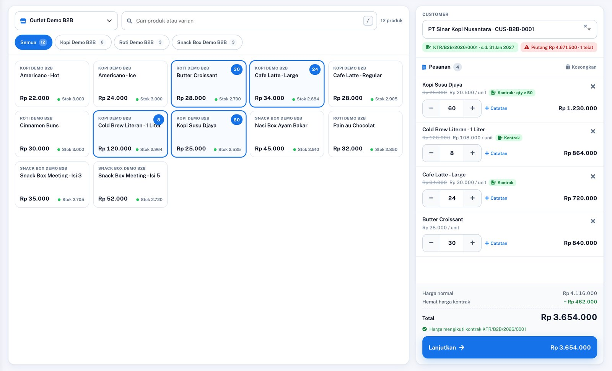
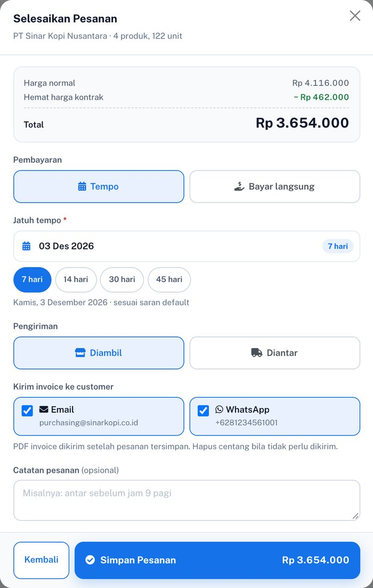
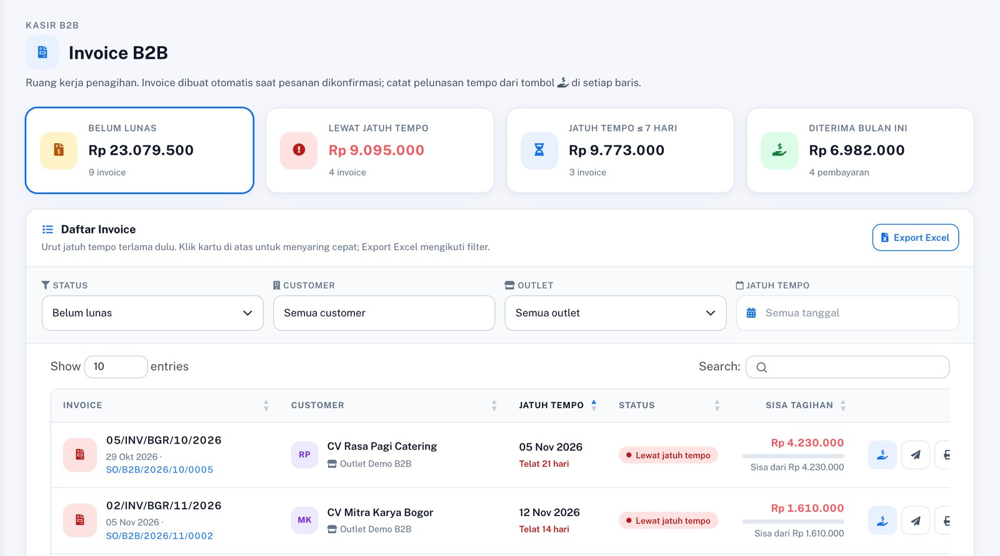
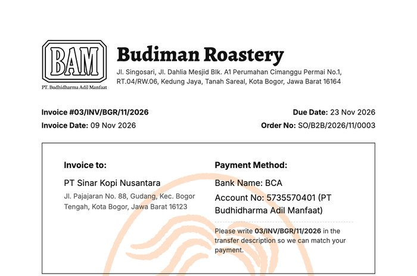
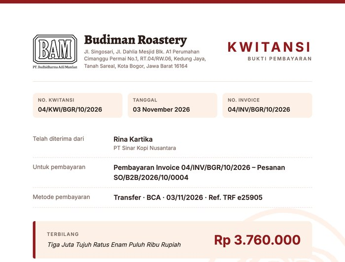
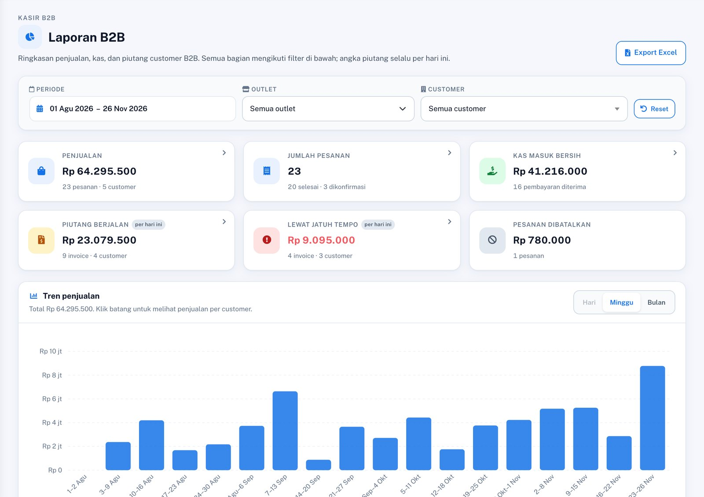

| Kopi Susu Literan 1L40 × 78.000 · harga kontrak | 3.120.000 |
| Biji Kopi House Blend 1kg12 × 189.000 · harga kontrak | 2.268.000 |
| Cold Brew 250ml60 × 25.000 · harga normal | 1.500.000 |
- Total
- Rp 6.888.000
Penjelasan alur kerja · 23 November 2026
Cara melayani pelanggan bisnis: harga sesuai kontrak, bayar langsung atau tempo, tagihan diingatkan otomatis, dan semuanya tercatat di laporan.
| Kopi Susu Literan 1L40 × 78.000 · harga kontrak | 3.120.000 |
| Biji Kopi House Blend 1kg12 × 189.000 · harga kontrak | 2.268.000 |
| Cold Brew 250ml60 × 25.000 · harga normal | 1.500.000 |
Gambaran umum
| Kasir POS (Android) | Kasir B2B | |
|---|---|---|
| Pembeli | Umum, boleh tanpa nama | Wajib customer bisnis yang terdaftar |
| Harga | Harga normal | Harga kontrak customer, muncul otomatis |
| Pembayaran | Bayar di tempat | Bayar langsung, atau tempo sampai 180 hari |
| Penagihan | Tidak ada | Invoice + pengingat email & WhatsApp otomatis |
| Uang tunai | Masuk setoran shift | Dicatat terpisah, tidak mengganggu shift POS |
| Laporan | Laporan penjualan POS | Laporan B2B sendiri: penjualan, piutang, kas, kontrak |
Manfaat untuk usaha
Kasir tidak perlu menghafal atau menghitung harga khusus. Salah harga hilang.
Terlihat siapa yang belum bayar, berapa, dan sudah berapa lama lewat jatuh tempo.
Sistem yang mengingatkan customer setiap hari sesuai jadwal, bukan admin.
Alur besar
Data perusahaan, PIC, alamat, dan cara diingatkan.
AdminHarga khusus per produk untuk periode tertentu.
AdminPilih customer dan produk. Harga kontrak keluar sendiri.
KasirLangsung saat pesanan disimpan. Stok berkurang.
SistemBayar langsung = lunas saat itu. Tempo = ditagih sampai jatuh tempo.
CustomerEmail dan WhatsApp sebelum dan sesudah jatuh tempo.
SistemAdmin mencatat transfer yang masuk. Status jadi Lunas.
AdminPenjualan, piutang, uang masuk, dan kontrak yang akan habis.
PemilikLangkah 1 · Admin

Langkah 2 · Admin

Langkah 3 · Kasir


Kontrak yang sedang berlaku langsung terbaca.
Harga kontrak muncul sendiri. Stok kurang tetap bisa dipesan, dengan peringatan.
Diambil sendiri (pesanan langsung selesai) atau kurir internal.
Tempo: jatuh tempo dipilih kasir (saran 7 hari, maks. 180). Bayar langsung: tunai, transfer, EDC, atau QRIS; tunai menghitung kembalian.
Invoice (tempo) atau kwitansi (bayar langsung) terkirim lewat email dan/atau WhatsApp. Centang bisa dihapus.
Setelah pesanan disimpan
Pesanan tercatat, stok sudah berkurang, invoice sudah terbit.
Barang sudah sampai ke customer.
Bisa dari Dikonfirmasi. Dari Selesai hanya untuk koreksi salah input, dan hanya oleh petugas yang diberi izin khusus.
Yang terjadi saat pesanan dibatalkan
Langkah 4–7 · Admin penagihan



Langkah 6 · Sistem
Langkah 8 · Pemilik

Data contoh. Laporan bisa disaring per periode, outlet, dan customer.
Keamanan
| Pekerjaan | Kasir | Admin penagihan | Admin data (customer & kontrak) | Pemilik |
|---|---|---|---|---|
| Input pesanan di Kasir B2B | ✓ | – | – | ✓ |
| Tandai pesanan selesai, batalkan pesanan | ✓ | – | – | ✓ |
| Batalkan pesanan yang sudah selesaikoreksi salah input | – | – | – | ✓ |
| Catat dan batalkan pelunasan | – | ✓ | – | ✓ |
| Kirim pengingat manual | – | ✓ | – | ✓ |
| Saklar darurat dan nomor WhatsApp penagihan | – | – | – | ✓ |
| Kelola customer dan kontrak harga | – | – | ✓ | ✓ |
| Lihat Laporan B2B | – | ✓ | – | ✓ |
Ini contoh pembagian. Setiap izin bisa diberikan atau dicabut per jabatan lewat menu Hak Akses, tanpa mengubah program.
Langkah berikutnya
Setelah pendaftaran rekening ke BCA selesai
Diskusi & tanya jawab
Sampai keputusan ini diambil, transfer tempo dicatat manual dari menu Invoice. Untuk pilihan A dibutuhkan contoh file mutasi rekening BCA perusahaan.